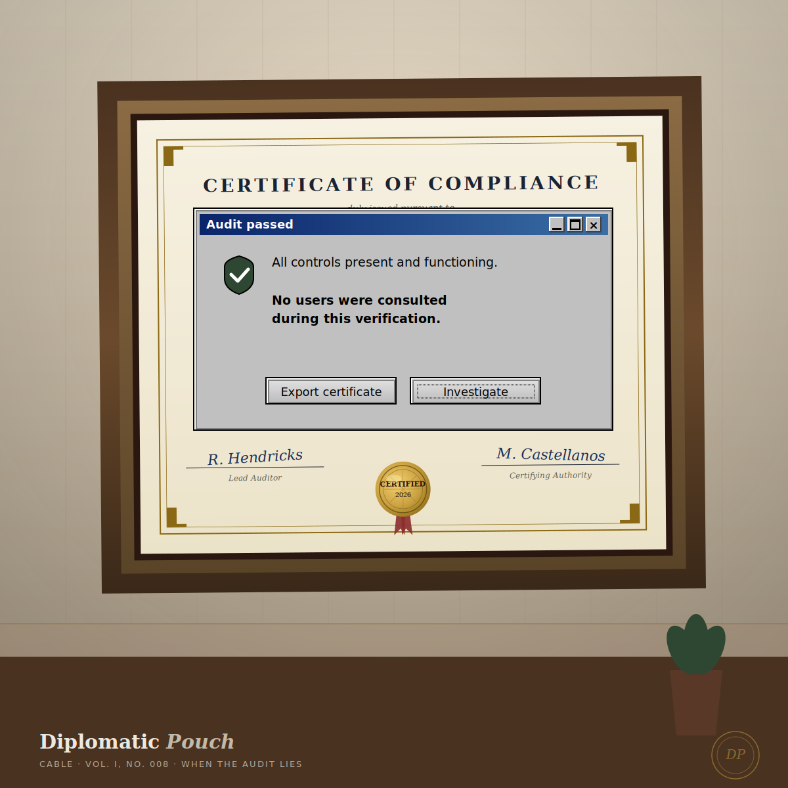

When the Audit Lies
On the gap between what compliance measures and what security actually is.

Every CISO I have advised has had some version of the same moment. The annual SOC 2 audit comes back clean. The compliance dashboard is green. The security team has hit all of its quarterly metrics. The board is satisfied. The auditor's letter sits in the document repository where the next sales cycle will pull it. Then something breaks anyway, and the post-mortem reveals that the audit was measuring something that had stopped being a good proxy for security some time before.
I want to write about why this happens, because it is not a failure of any individual auditor or any individual program. It is a structural feature of the compliance-as-security model that we have built into the regulatory and procurement infrastructure of the entire industry, and it is going to keep producing the same kind of failure until we name it clearly enough to design around it.
The argument I am making is not that compliance is useless. Compliance is the floor. The argument is that the floor has been mistaken for the ceiling, and the mistake has cost organizations real money, real breaches, and real customer trust. The remediation is not to abandon compliance. The remediation is to put compliance back in its place as a floor and to build, alongside it, the work that compliance cannot do.
Why audits drift
Regulators write rules based on the breaches that have already happened. They write them slowly, because the rulemaking process is slow by design — the slowness is a feature that protects against regulatory overreach in moments of panic. By the time a regulation reaches a final published standard, the threat landscape that generated the original concern has moved. The standard captures what was important three years ago, with carve-outs for what was politically achievable two years ago, audited by frameworks that were developed eighteen months ago, applied by auditors who were trained on the version of the framework that existed when they took their certification exam.
Attackers, meanwhile, innovate continuously. They are not bound by the rulemaking cycle. They are not bound by industry standards. They are not bound by anything except their own success rates, which are measured in real time and reinvested in the techniques that work. The asymmetry of the cadences is the structural problem. Defense moves at the pace of the regulatory cycle. Attack moves at the pace of the success rate.
The result is structural drift. The compliance regime measures yesterday's attack surface with reasonable accuracy. The attack surface attackers are working today is somewhere else, and the audit cannot see it because the audit was not designed to see it.
This is not a failure of any specific compliance framework. It is the necessary consequence of building defense out of standards that move slowly in a threat environment that moves quickly. The frameworks are doing what they were designed to do. The mistake is in believing that the frameworks are sufficient.
Four places the drift shows up
I want to be specific, because the abstract version of this argument is too easy to nod at and ignore.
SOC 2 Type II is excellent at measuring whether you have documented controls and followed them consistently across an audit period. It is not excellent at measuring whether the controls you have documented actually defend against the attacks your organization is most likely to face. An organization can be perfectly SOC 2 compliant and still be wide open to the social engineering vector that is responsible for the majority of breaches in its sector, because SOC 2 was not designed as a defense against social engineering. It was designed as a documentation discipline. The two are not the same thing. A SOC 2 report tells your customer that you have controls. It does not tell your customer that those controls are calibrated to your threat model.
ISO 27001 has a similar dynamic at scale. The Annex A controls cover what was considered important when the standard was last refreshed. They do not cover what is happening in the AI agent identity layer I wrote about earlier this summer. They will, eventually. The standard will incorporate the new threats. By the time it does, the threats will have moved again. ISO 27001 is more flexible than SOC 2 in this respect — the standard allows for a risk-based interpretation that, in principle, lets the implementing organization tailor the control set to their actual risk environment. In practice, this flexibility is rarely exercised, because the auditor is trained to look for the canonical controls and the organization is incentivized to ship the canonical implementation. The flexibility exists. It is rarely used.
FedRAMP, which I have particular familiarity with, sets a serious bar for federal cloud security. The bar is also a snapshot of the threat model at the time the moderate or high baseline was finalized. The continuous monitoring requirements help. They do not close the gap entirely, because the monitoring is performed against the controls that exist, and the controls that exist are by definition the ones that were written down in the past. FedRAMP is one of the better compliance regimes I have worked with, and the gap is still real. An organization can be in continuous compliance with the FedRAMP moderate baseline and still be vulnerable to attack patterns the baseline did not anticipate.
The NIST Cybersecurity Framework is the most honest of the major frameworks about its own limits. The CSF is structured as a maturity model that explicitly assumes organizations will operate at different levels of capability and that the appropriate level depends on the organization's risk environment. This honesty does not stop the framework from drifting. The maturity model captures what was considered mature when the framework was last revised. Organizations that are at maturity level four against a framework that was last revised in 2023 are not necessarily defending against the attack patterns of 2026. The honesty is necessary; it is not sufficient.
What honest compliance programs do
The CISOs I respect most have stopped treating compliance as the security program and started treating it as one input to the security program. Their compliance dashboards are still green, because the compliance work still has to be done. The customers buying from them require the audit. The regulators require the audit. The procurement process requires the audit. The compliance work is real work and it deserves real investment. The CISO does not deny any of this.
What the CISO does is build a parallel discipline of measuring the security work that compliance does not measure. They run two programs. The compliance program satisfies the floor. The security program does the actual work. The two programs share resources but report separately. The board sees both reports. The board learns to read both reports.
Three things these CISOs add to the compliance program.
One. A continuous adversary emulation program. Not just penetration testing, which is point-in-time and which auditors tend to read as a compliance artifact rather than as security intelligence. Continuous red team activity that runs alongside the operational security program and tests against the threat models the team is actually concerned about, including the threats that the standards have not yet caught up to. The red team's findings are integrated into the architecture review board, not buried in an annex of an annual report. The red team has the authority to recommend architectural changes that are not on the compliance roadmap.
The cost of this program is meaningful. The return is harder to measure than the compliance investment because the wins are negative wins — breaches that did not happen. The CISO who is good at this work learns to present negative wins in a form the board can absorb. This is the diplomatic translation I wrote about in the Memoir on Three Embassies. The skill is the same. The work is the same.
Two. A metric for "compliance drift" itself. The gap between what the standard requires and what the team's threat assessment says the actual risk is. This metric should be reviewed at every quarterly security committee meeting. It should be allowed to be uncomfortable. The first time you report that your SOC 2 is green but your actual ransomware exposure is at moderate-to-high risk, you will get pushback from finance and from the board. They will say: the SOC 2 says we are fine. You will need a sentence ready: the SOC 2 says we meet the standard. The standard is not designed to measure ransomware exposure. Here is what is. They will not enjoy hearing this. They will need to hear it. The next time the metric is allowed to be hidden, it gets hidden by default, and the discipline of measuring compliance drift slowly dies.
The metric does not have to be elaborate. A single quarterly slide that lists the major attack categories your sector is currently facing, your assessed exposure to each, and the gap between that exposure and what the compliance framework measures. Three columns. One slide. Reviewed quarterly. The discipline is in the cadence, not in the complexity.
Three. A board-level vocabulary for the difference. Every CISO needs language they can use with their board to explain that compliance is necessary and not sufficient. The language I use with clients is: compliance is the floor. Security is the ceiling. The job of the security architect is to keep enough distance between them that the floor does not become the ceiling. When the board internalizes that distinction, the budget conversations get easier, because the security investments stop being framed as exceeding what is required and start being framed as the difference between the floor and the ceiling — which is, in plain language, the actual security of the organization.
The first time a board hears this framing, some board members will push back. They will say: if the compliance framework is not sufficient, why are we paying for the compliance framework? The answer is that the compliance framework is a contract. We pay for it because our customers, our regulators, and our procurement counterparties require us to. The compliance framework is necessary because of the legal and commercial environment we operate in. It is not sufficient because of the threat environment we operate in. Both environments are real. Both have to be addressed. The security program addresses both.
This conversation takes about three quarterly board meetings to land. After three meetings, the board members who are going to internalize the distinction will have internalized it. The ones who have not will reveal, in their resistance, what their actual interest in security is. The CISO will learn which board members are partners and which are obstacles. This is useful information.
What the cable taught me
The daily USAID notice I wrote at twenty-two had a kind of compliance regime around it. There were rules about what could and could not go into the cable, what classification levels applied, what review chains had to sign off before transmission. I followed the rules. The rules were a floor. The rules were not the actual work of writing a good cable.
The actual work was figuring out what mattered, who needed to know, how to say it so it would be read carefully on every continent it landed on. The rules did not measure any of that. The rules could not have. The rules were trying to prevent a particular set of past failures from recurring. The work of writing a good cable was the work of preventing failures the rules had not anticipated. Both jobs were necessary. They were not the same job.
Twenty years later, in cybersecurity practice, I find myself making the same distinction, mostly to clients whose boards do not yet understand it. The compliance audit is necessary. It is not the actual work. The actual work is what you do with the time and resources that compliance does not consume. If you do not protect that time and those resources, the actual work does not get done, and the next breach in your environment will be the one your compliance program could not have caught.
Compliance is the floor. Security is the ceiling. The job is to keep enough distance between them that the floor does not become the ceiling. Everything I do for clients is, in some form, the work of widening that gap.
Next dispatch ── Memoir.
— Dr. Safi Mojidi